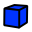

Contents
新着情報
- バージョン0.12リリースノート ： FreeCAD リリース 0.12 の新着情報をチェックしてください。
序文
FreeCADは、CAD/CAE用のパラメトリックモデリングアプリケーションです。まだ開発の初期段階なので、すぐに作品の製作に使用できると期待しないように。でもFreeCADがどういったもので、またどういった機能が開発されているのか興味がある方は、是非ダウンロードして試してみてください。現時点では既にたくさんの機能が実装されています。しかしユーザーインターフェイスはまだ十分に開発されていません。したがって、もしあなたがPythonを少し知っていれば、比較的に簡単に複雑な形状の作成や修正にすぐに取りかかれますが、Pyhtonを知らなければ、FreeCADが提供する機能はまだほんの僅かであると感じるでしょう。でも待ってください、すぐに改善されますから。
評価後のアイデアや意見は、是非FreeCADディスカッションフォーラムで私たちと共有しましょう！
インストール
まず初めに（まだ済んでいなければですが）FreeCADをダウンロードしてインストールしてください。ダウンロードページで現在のバージョンと更新を確認しましょう。インストールパッケージはWindows用（.msi）とUbuntuとDebian用（.deb）、openSUSE（rpm）とMac OSX用を用意しています。 See the インストール page for information about how to install FreeCAD.
FreeCADを試してみる
FreeCADは汎用の3Dモデリングアプリケーションです。機械工学と、専門的なエンジニアリングや建築などの関連分野に重点を置いています。FreeCADは、限られた特定のタスクを実行するためだけではなく、あらゆる種類の3Dアプリケーションを開発するためのプラットフォームとして考えられています。このため、FreeCADのインターフェイスは一連の ワークベンチに分けられています。ワークベンチでは特定のタスクやタスクグループに必要なツールのみを表示するようにインターフェイスの内容を変更することができます。
つまりFreeCADのインターフェイスは、メニューバーや3Dビュー領域、及びシーンの内容やオブジェクトのプロパティを表示するための幾つかのサイドパネルを持つ、とてもシンプルな容れ物であると言えるでしょう。また、これらのパネルの全ての内容はワークベンチに応じて変更することができます。
初めてFreeCAD起動すると"一般的な"ワークベンチ（我々は”完全なワークベンチ”と呼びますが）が表示されます。このワークベンチは、他のワークベンチから最も完成されたツールを集めたものです。FreeCADはかなり若くまだ専門的な作業には使用されていませんから、このワークベンチはFreeCADをより簡単に知るうえでとても役に立つでしょう。基本的には、ジオメトリを作成するために十分なツールは全てこのワークスペースにあります。
3次元空間での操作
FreeCADは2つの異なる操作モードを持っており、ユーザー設定ダイアログまたは3Dビューでの右クリックで変更できます。これらのモードの詳細についてはマウスモデルのページを見てください。 デフォルトのモード("CAD操作モード")ではコマンドは以下の通りです。
| 選択 | 平行移動 | 拡大縮小 | 回転表示 |
|---|---|---|---|

|

|

|

|
| 選択したいオブジェクトの上で左マウスボタンを押してください。Ctrlを押したまま操作すると複数のオブジェクトを選択できます。 | マウス中央ボタンを押して動かしてオブジェクトを平行移動させます。 | 拡大縮小にはマウスホイールを使用してください。 | まず中央マウスボタンを押し、そのまま表示されているオブジェクトの任意の点で左ボタンをクリックして好きな方向にドラッグします。こうすると中心の周りを回転する球のように回転が行われます。ドラッグを止める前にボタンを離すとオブジェクトは回転し続けます（有効になっている場合）。オブジェクト上の任意の点でマウスの中央ボタンをダブルクリックするとその点が回転、拡大縮小の原点に設定されます。 |
またViewメニュー、Viewツールバー、数値のショートカット（ 1 2など...）からプリセットのビュー（トップビュー、フロントビューなど）が利用できます。
2次元の製図
This template is now obsolete and is directly include in the original page
===作図オブジェクト===
オブジェクトを作成するためのツールです。
 2点線分: 2点からなる線分を描きます
2点線分: 2点からなる線分を描きます- ワイヤー（複数の点からなる線分）: 複数点の線分で作られる線を描きます
 円: 中心と半径から円を描きます
円: 中心と半径から円を描きます 円弧: 中心、半径、開始角度と終了角度から円弧を描きます
円弧: 中心、半径、開始角度と終了角度から円弧を描きます 四角形: ２つの対点から四角形を描きます
四角形: ２つの対点から四角形を描きます 多角形: 中心と半径から正多角形を描きます
多角形: 中心と半径から正多角形を描きます B-スプライン: 点列からB-スプラインを描きます
B-スプライン: 点列からB-スプラインを描きます テキスト: 複数行のテキストの注釈を描きます
テキスト: 複数行のテキストの注釈を描きます 寸法: 寸法の注釈を描きます
寸法: 寸法の注釈を描きます 点: 点オブジェクトを挿入します
点: 点オブジェクトを挿入します


オブジェクトの変更
既存のオブジェクトを変更するためのツールです。これらのツールは選択したオブジェクトに対して動作します。もしオブジェクトを選択していない場合にはオブジェクトを選択するように促します。
 移動: オブジェクト（複数可）をある位置から別の位置へ移動します
移動: オブジェクト（複数可）をある位置から別の位置へ移動します- 回転: 開始角から終了角へのオブジェクト（複数可）を回転します
- オフセット: オブジェクトの線分を一定の距離だけ移動します
 アップグレード: オブジェクトを結合し、1階層上のオブジェクトにします
アップグレード: オブジェクトを結合し、1階層上のオブジェクトにします ダウングレード: オブジェクトを解体し、1階層下のオブジェクトにします
ダウングレード: オブジェクトを解体し、1階層下のオブジェクトにします- トリム/延長: オブジェクトをトリムまたは延長します
- スケール: 選択したオブジェクト（複数可）を基点を中心にスケールします
- 編集: 選択したオブジェクトを編集します
- ドローイング: 選択されたオブジェクトをドローイングシートに書き込みます
- 2Dビュー成形: 別の3Dオブジェクトの平面化2Dビューであるような2Dオブジェクトを作成します
 ワイヤーからB-スプラインへ: ワイヤーからB-スプラインへの変換、またその逆変換を行います
ワイヤーからB-スプラインへ: ワイヤーからB-スプラインへの変換、またその逆変換を行います 点の追加: ワイヤーまたはB-スプラインへ点を追加します
点の追加: ワイヤーまたはB-スプラインへ点を追加します 点の削除: ワイヤーまたはB-スプラインから点を削除します
点の削除: ワイヤーまたはB-スプラインから点を削除します ドラフトからスケッチへ: ドラフトオブジェクトからスケッチへの変換、またその逆変換を行います
ドラフトからスケッチへ: ドラフトオブジェクトからスケッチへの変換、またその逆変換を行います 配列: 選択されたオブジェクトを円形または矩形に並べた配列を作成します
配列: 選択されたオブジェクトを円形または矩形に並べた配列を作成します 複製: 選択されたオブジェクトを複製します
複製: 選択されたオブジェクトを複製します


{kind=link}
{kind=link}
{kind=link}
{kind=link}
{kind=link}
{kind=link}
{kind=link}
{kind=link}
{kind=link}
{kind=link}
ユーティリティーツール
右クリックのコンテキストメニューから利用可能な追加ツールです。選択されているオブジェクトに依存して変わります。
-
 作業平面の設定: 標準ビューまたは選択された面から作業平面を設定します
作業平面の設定: 標準ビューまたは選択された面から作業平面を設定します -
 ラインを終了: ワイヤー、B-スプラインの描画をラインが閉じないで終了します
ラインを終了: ワイヤー、B-スプラインの描画をラインが閉じないで終了します -
 ラインを閉じる: ワイヤー、B-スプラインの描画をラインを閉じて終了します
ラインを閉じる: ワイヤー、B-スプラインの描画をラインを閉じて終了します -
 ラインをアンドゥ: ラインの最後の区間をアンドゥします
ラインをアンドゥ: ラインの最後の区間をアンドゥします -
 作成モードの切り替え: ドラフト作成モードのオン/オフを切り替えます
作成モードの切り替え: ドラフト作成モードのオン/オフを切り替えます -
 継続モードの切り替え: ドラフト継続モードのオン/オフを切り替えます
継続モードの切り替え: ドラフト継続モードのオン/オフを切り替えます -
 スタイルを適用: 選択されたオブジェクトに現在のスタイルと色を適用します
スタイルを適用: 選択されたオブジェクトに現在のスタイルと色を適用します -
 表示モードの切り替え: 選択されたオブジェクトの表示モードを"フラットライン"または"ワイヤーフレーム"に切り替えます
表示モードの切り替え: 選択されたオブジェクトの表示モードを"フラットライン"または"ワイヤーフレーム"に切り替えます -
 グループに追加: ただちに選択されたオブジェクトを既存のグループに追加します
グループに追加: ただちに選択されたオブジェクトを既存のグループに追加します -
 グループの中身を選択: 選択されたグループの中身を選択します
グループの中身を選択: 選択されたグループの中身を選択します -
 スナップの切り替え: オブジェクトのスナップのオン/オフを切り替えます
スナップの切り替え: オブジェクトのスナップのオン/オフを切り替えます -
 グリッドの切り替え: グリッドのオン/オフを切り替えます
グリッドの切り替え: グリッドのオン/オフを切り替えます -
 スナップバーを表示: スナップツールバーの表示/非表示を切り替えます
スナップバーを表示: スナップツールバーの表示/非表示を切り替えます
 3Dパーツの作成
{kind=link}
プリミティブ
プリミティブオブジェクトを作成するためのツールです。
-
 ボックス: 寸法を指定してボックスを描きます
ボックス: 寸法を指定してボックスを描きます -
 円錐: 寸法を指定して円錐を描きます
円錐: 寸法を指定して円錐を描きます -
 円筒: 寸法を指定して円筒を描きます
円筒: 寸法を指定して円筒を描きます -
 球: 寸法を指定して球を描きます
球: 寸法を指定して球を描きます -
 トーラス: 寸法を指定してトーラス（円環）を描きます
トーラス: 寸法を指定してトーラス（円環）を描きます
オブジェクトの変更
既存のオブジェクトを変更するためのツールです。変更するオブジェクトを選択して使用します。
-
 ブーリアン: オブジェクトのブーリアン演算を行います
ブーリアン: オブジェクトのブーリアン演算を行います - 結合: 二つのオブジェクトを結合します（和集合）
-
 共通部: 二つのオブジェクトの共通部分を抽出します（共通集合）
共通部: 二つのオブジェクトの共通部分を抽出します（共通集合） -
 切り取り: オブジェクトを別のオブジェクトから切り取ります（減算）
切り取り: オブジェクトを別のオブジェクトから切り取ります（減算） -
 押し出し: オブジェクトの平面を押し出します
押し出し: オブジェクトの平面を押し出します -
 フィレット: オブジェクトのエッジをフィレット処理（丸め処理）します
フィレット: オブジェクトのエッジをフィレット処理（丸め処理）します -
 回転体: 別のオブジェクトを軸周りに回転させてオブジェクトを作成します
回転体: 別のオブジェクトを軸周りに回転させてオブジェクトを作成します -
 分割: 分割面をオブジェクトに交差させることで切断面を作成します
分割: 分割面をオブジェクトに交差させることで切断面を作成します -
 面取り: オブジェクトのエッジを面取りします
面取り: オブジェクトのエッジを面取りします -
 ミラー: 指定された鏡面に対して選択されたオブジェクトの鏡像を作成します
ミラー: 指定された鏡面に対して選択されたオブジェクトの鏡像を作成します
{kind=link}
2D図面へのエクスポート
This template is now obsolete and is directly include in the original page
2D図面を作成、設定、エキスポートするためのツールです。
-
 スケーラブルベクターグラフィックを開く: SVGファイルとして保存されている図面を開きます
スケーラブルベクターグラフィックを開く: SVGファイルとして保存されている図面を開きます -
 A3図面の新規作成: FreeCADのデフォルトのA3テンプレートから新しい図面を作成します
A3図面の新規作成: FreeCADのデフォルトのA3テンプレートから新しい図面を作成します -
 ビューの挿入: アクティブな図面上に選択されたオブジェクトのビューを挿入します
ビューの挿入: アクティブな図面上に選択されたオブジェクトのビューを挿入します -
 図面の保存: 現在の図面をSVGファイルとして保存します
図面の保存: 現在の図面をSVGファイルとして保存します
外部レンダラーへのエクスポート
作成した3D作品を外部のレンダラーにエクスポートするためのツールです。
-
 POV-Rayオブジェクトの新規作成: ドキュメントに新しいPOV-Rayプロジェクトを挿入します
POV-Rayオブジェクトの新規作成: ドキュメントに新しいPOV-Rayプロジェクトを挿入します -
 ビューをPOV-Rayにエクスポート: アクティブな3Dビューのカメラ位置と内容全てをPOV-Rayファイルに書き込みます
ビューをPOV-Rayにエクスポート: アクティブな3Dビューのカメラ位置と内容全てをPOV-Rayファイルに書き込みます -
 カメラをPOV-Rayにエクスポート: アクティブな3Dビューのカメラ位置をPOV-Rayフォーマットでファイルに書き込みます
カメラをPOV-Rayにエクスポート: アクティブな3Dビューのカメラ位置をPOV-Rayフォーマットでファイルに書き込みます -
 部品をPOV-Rayにエクスポート: 選択された部品（オブジェクト）をPOV-Rayファイルとして書き込みます
部品をPOV-Rayにエクスポート: 選択された部品（オブジェクト）をPOV-Rayファイルとして書き込みます
スクリプト
最後はFreeCADの最も強力な機能の一つ、スクリプト環境です 。統合されたPythonコンソールから（あるいは他の外部のPythonスクリプトからでも）、FreeCADのほとんど全ての機能へアクセスできます。ジオメトリの作成や修正、3Dシーンでのオブジェクトの表示方法の変更、FreeCADインターフェースへのアクセスや変更が可能です。Pythonスクリプトはまたマクロとしても使用され、カスタムコマンドを簡単に作成することができます。